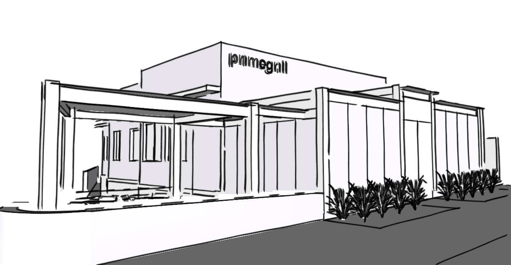
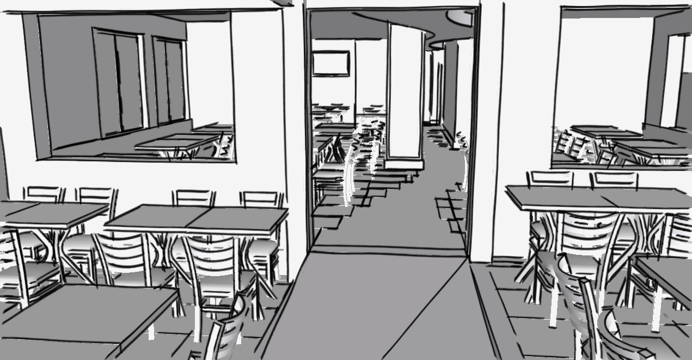
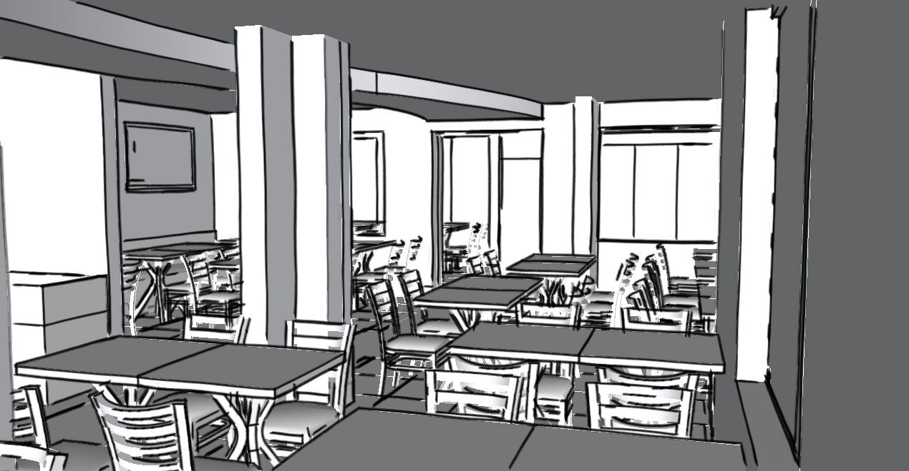
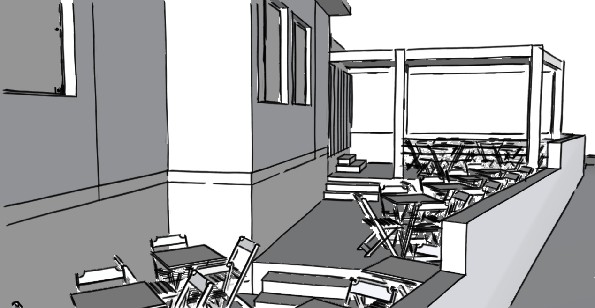

Arquitetura + interiores + paisagismo | Petrópolis | Porto Alegre
A casa dos anos 1950 precisava ser reformada para agora funcionar como um restaurante. As modificações foram muitas,
abertura de paredes, reforço estrutural, telhado novo, janelas novas, até a infraestrutura toda refeita, incluindo elétrica,
hidráulica, gás e climatização. Procuramos aproveitar a iluminação natural e a vista para os antigos jacarandás-mimosos
que contornam o terreno de esquina, ampliando as janelas existentes e utilizando também o ambiente externo para happy-hour,
com decks e cobertura de vidro. Com a continuidade do piso de madeira de demolição no piso, demos coerência entre ambientes
externo e interno, complementada com a leveza do porcelanato e do forro de gesso em tons claros. O destaque fica para a
circulação sinuosa que a edificação possuía, e que foi salientada com o uso de acabamentos diferenciados.
Porto Alegre, RS.



